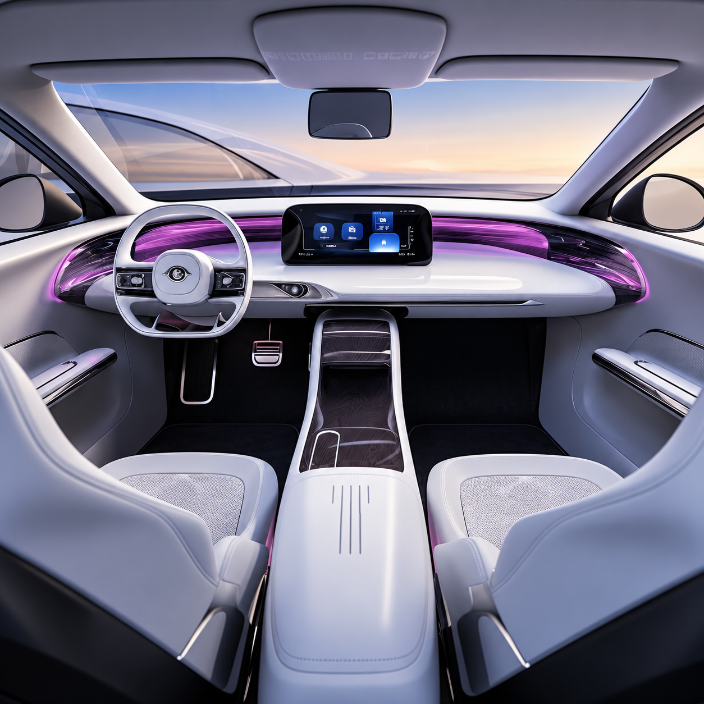

Global Tier-1
suppliers
Global expertise. Local production.
Where global automotive capability takes root in Saudi Arabia.
TASARU Supplier Hub gives global automotive suppliers a dedicated platform to establish critical manufacturing capabilities within the Kingdom.
Critical manufacturing
capabilities
Dedicated supplier
platform
The platform
A place for expertise to become production.
TSH brings together what the five Tier-1 suppliers need to start local production: land, manufacturing facilities and production equipment.
How it worksLand
A dedicated physical base for supplier operations.
Real estate
Manufacturing facilities supporting the supplier platform.
Equipment
Production equipment supporting localized manufacturing.
TASARUSupplier Hub
WHAT IS BEING LOCALIZED
Five component categories.
One connected platform.
The Hub is localizing five critical automotive component categories.

Seating
Lear
Seating combines comfort, safety and function at the center of the cabin. Localizing its manufacture brings a core component category closer to Saudi vehicle production.

Body-in-white
Shin Young
The body-in-white forms the structural foundation of a vehicle. Establishing this manufacturing capability locally supports a critical stage of the automotive value chain.

Chassis
BENTELER
Chassis systems carry the vehicle and shape how it handles and performs. Local capability strengthens the link between specialist component manufacturing and the OEM production line.

Interior plastics
Fangxin
From cabin surfaces to functional interior parts, plastic components shape the in-vehicle experience. Local manufacturing brings this capability into the Saudi supply chain.

Exterior plastics
JVIS
Exterior plastic components combine form and function across the vehicle. Localizing their manufacture expands the range of components available within the Kingdom's automotive ecosystem.
1 / 5 — Seating
The supplier network
Connecting expertise
to production.
Explore the suppliers
By localizing critical automotive manufacturing capabilities and enabling technical knowledge transfer, TASARU Supplier Hub supports Saudi Arabia’s industrial development and Vision 2030 ambitions.
Five global Tier-1 suppliers
Specialist automotive manufacturing knowledge.
TASARU Supplier Hub
A dedicated platform for localizing critical manufacturing capabilities.
The OEM ecosystem
Critical component manufacturing positioned closer to Saudi production.
Location
Within a growing automotive ecosystem.
Located in MASARAT Mobility Park™ in King Abdullah Economic City, TSH connects its supplier platform to the wider Saudi automotive environment.

TASARU Supplier Hub
Start a conversation with
TASARU Supplier Hub
For supplier, partnership, media or stakeholder inquiries, contact our team.
Get in touch